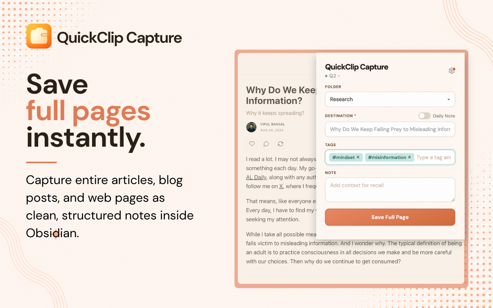
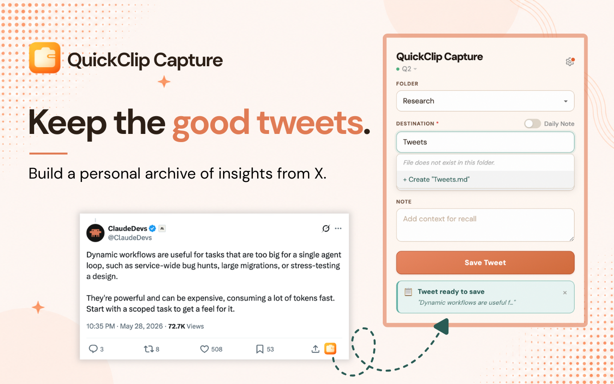
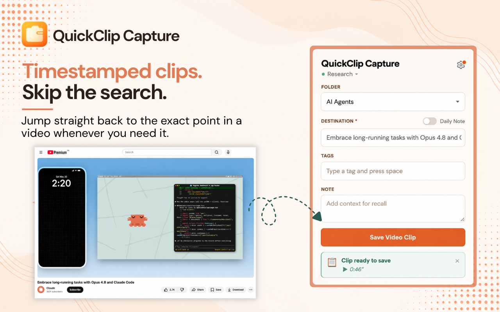
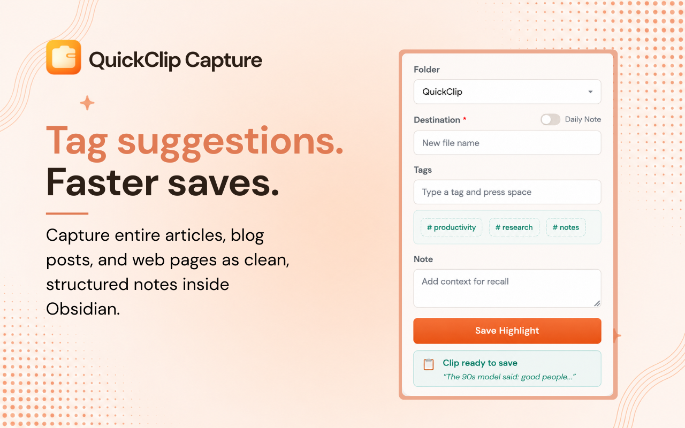
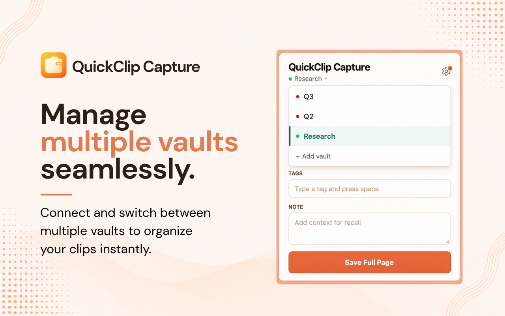

Three tools, one pipeline. Capture anything from the web, see it beautifully rendered in Obsidian, and organize it into connected knowledge.
That sentence you just saw highlighted? Watch it travel through all three tools — from a webpage to organized, connected knowledge.
Highlights, full pages, tweets, PDFs, YouTube clips — all land in your vault as structured Markdown, tagged and ready.
The same highlight — now a styled card in your vault. A reading view that feels native, plus a management panel to edit, annotate, and delete without hunting through files.
And finally — the highlight becomes a node in your knowledge graph. Classified, linked to a project, tracked. Your vault builds itself as you research.
From a sentence on a webpage to a node in your knowledge graph — without leaving your flow.





Each tool works standalone. Together they complete your workflow.
Clip the web into Obsidian in seconds — highlights, full pages, tweets, PDFs, and videos.
Add to ChromeRender every clip as a beautiful card and manage them all from inside Obsidian.
Install Plugin